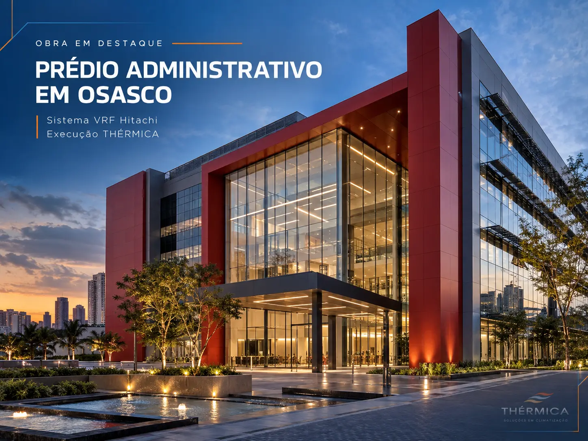
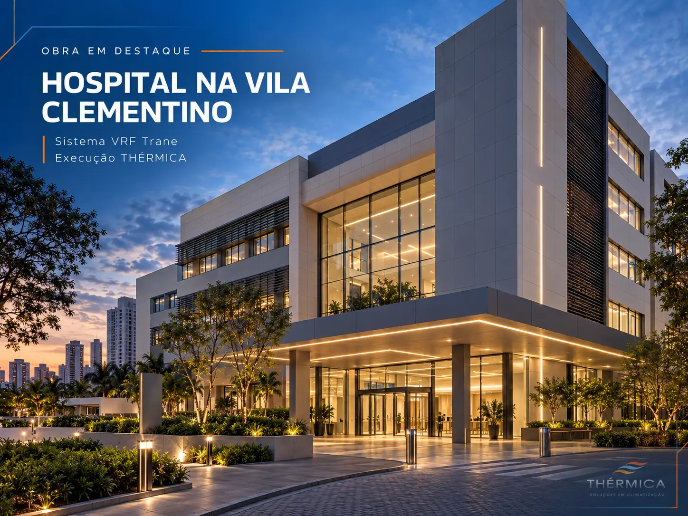
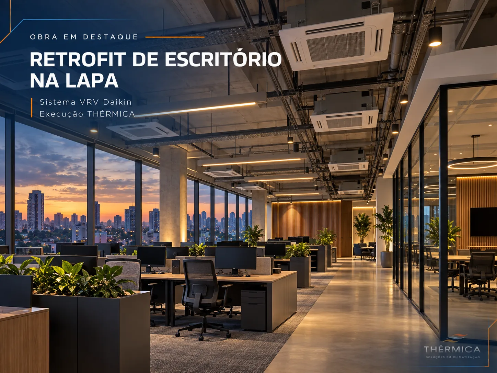

Levantamento técnico
Verificação de ocupação, cargas térmicas de projeto, acessos, infraestrutura, restrições arquitetônicas e condições da operação.

A THÉRMICA realiza instalação de ar-condicionado VRF para empresas com planejamento técnico, implantação de infraestrutura, montagem, ensaios e entrega documentada. Uma solução de engenharia para construtoras, gerenciadoras de obras, escritórios e operações corporativas.
Recebemos demandas de todos os estados. A execução depende de análise do escopo, da região e da viabilidade de mobilização.
A instalação de ar-condicionado VRF para empresas envolve interfaces entre o projeto térmico, arquitetura, alimentação elétrica, drenagem, infraestrutura frigorígena, controles e rotina de operação do edifício. Uma decisão inadequada nessas etapas pode se transformar em retrabalho ou indisponibilidade futura.
A THÉRMICA atua com foco em instalações VRV/VRF corporativas para contratantes que precisam de escopo definido, documentação de engenharia e execução coordenada. Podemos avaliar projetos existentes ou demandas em fase de estudo, respeitando a participação dos projetistas, fabricantes e responsáveis de cada disciplina.
Quando o cliente já dispõe de desenhos e memorial, iniciamos pela leitura das quantidades, interfaces e premissas executivas. Quando a solução ainda está em concepção, o primeiro passo é compreender o uso do imóvel, a infraestrutura disponível e os limites de fornecimento. A contratação deve diferenciar projeto, equipamentos, montagem, testes e responsabilidades.
Cada contrato possui premissas próprias. Estas são as etapas normalmente analisadas antes e durante a execução.
Verificação de ocupação, cargas térmicas de projeto, acessos, infraestrutura, restrições arquitetônicas e condições da operação.
Coordenação de interfaces com elétrica, arquitetura, drenagem e automação, definindo sequência executiva, logística e pontos de inspeção.
Execução, conforme escopo aprovado, da suportação, linhas frigorígenas, drenos, comunicação e instalação de unidades internas e externas.
Verificações de estanqueidade, vácuo, alimentação elétrica, comunicação, parametrização, partida e documentação contratual.
Um sistema de fluxo de refrigerante variável pode atender ambientes independentes, com controle por zonas e modulação conforme a demanda térmica. Essa característica o torna relevante para escritórios, salas de reunião, hotéis, instituições de ensino e áreas administrativas. A seleção exige avaliar capacidade, comprimento das redes, renovação de ar, operação e manutenção.
Em hospitais, laboratórios e áreas críticas, a tecnologia precisa ser avaliada em conjunto com requisitos específicos de ventilação, filtragem, pressurização, confiabilidade e redundância. O VRF pode compor sistemas adequados, mas não substitui automaticamente os equipamentos e procedimentos exigidos para ambientes controlados.
A performance prevista pressupõe projeto e execução compatíveis. Diâmetros, distâncias, drenagem, comunicação, alimentação e limites operacionais precisam respeitar a documentação do fabricante. Na instalação de VRF comercial, qualidade da infraestrutura e correta sequência de ensaios são tão relevantes quanto a escolha das máquinas.

Os critérios são definidos pelo projeto, normas aplicáveis e instruções de cada fabricante. Não adotamos uma pressão, tempo ou nível de vácuo genéricos para toda marca e modelo. A documentação exigível depende do escopo e da responsabilidade técnica contratada.
Traçados, isolamento, suportes e procedimentos de brasagem conforme o projeto, incluindo nitrogênio quando exigido.
Estanqueidade, vácuo, critérios de aceitação e registros segundo as especificações aplicáveis.
Elétrica, comunicação, drenagem, automação e acesso para inspeções futuras.
Checklists, relatórios, manuais, as-built e ART quando previstos e aplicáveis.
Nosso foco é a contratação empresarial, não a instalação residencial de aparelhos split. Atuamos em demandas de engenharia que envolvem coordenação de disciplinas, gestão de prazo e requisitos contratuais de construtoras, gerenciadoras e empresas.
Obras novas e expansão de empreendimentos.
Compatibilização, cronograma e responsabilidades.
Adequação em edifícios existentes.
Escritórios, hotéis, escolas e áreas administrativas.

Uma proposta responsável considera mais do que a quantidade de evaporadoras. O custo varia conforme a capacidade, configuração, extensão das redes, altura da edificação, interferências, logística, regime de execução e documentos exigidos.
Para comparar propostas de instalação de ar-condicionado VRF para empresas, suprimentos e engenharia precisam verificar a mesma base de escopo: quem fornece máquinas, linhas frigorígenas, drenagem, elétrica, automação, ensaios e documentação.
A contratação pode contemplar apenas montagem ou incluir fornecimento de equipamentos, infraestrutura, ensaios, startup e documentação. A proposta da THÉRMICA começa pela definição dessas fronteiras, para que as interfaces com outros prestadores não fiquem implícitas. Isso é especialmente relevante em obras corporativas com atividades simultâneas ou em prédios ocupados.
| Frente | O que deve ser definido |
|---|---|
| Engenharia | Projeto, compatibilização, premissas e revisões |
| Fornecimento | Equipamentos, insumos, logística e materiais |
| Execução | Infraestrutura, instalação, interfaces e cronograma |
| Entrega | Ensaios, startup, garantias, relatórios, as-built e ART quando cabível |
Avaliamos demandas em todas as unidades federativas. A viabilidade depende da localização, porte, cronograma, escopo e mobilização necessários. A relação de estados no rodapé não representa filiais físicas.
Sim, podemos analisar um projeto existente. A proposta deve esclarecer interfaces de responsabilidade, documentação e possíveis pendências antes da execução.
VRF descreve a tecnologia de fluxo de refrigerante variável. VRV é a denominação comercial usada pela Daikin. A seleção de modelos depende das premissas do empreendimento.
Podemos estudar execução por etapas, áreas e horários, com avaliação de restrições e necessidades de desligamento. A continuidade de operação não é garantida sem planejamento específico.
Informe cidade, tipo de empreendimento, fase da obra, prazo, projeto ou plantas disponíveis, equipamentos previstos e contato do responsável técnico ou de suprimentos.
Testes, partida, comissionamento e responsabilidade técnica devem constar do escopo aprovado, respeitando atribuições profissionais e exigências dos fabricantes.
Explore também: sistemas VRV/VRF, nova instalação, retrofit, obras executadas e etapas de implantação.
Envie plantas, quantitativos e cronograma, se disponíveis. Nossa equipe avaliará o escopo técnico e os próximos passos comerciais.
Recebemos solicitações de implantação de sistemas VRV/VRF de qualquer região brasileira. A execução em cada cidade fica condicionada à análise do projeto, da logística, do cronograma e da disponibilidade de mobilização. A relação abaixo não indica filial ou equipe fixa nesses locais.
Rio Branco, Macapá, Manaus, Belém, Porto Velho, Boa Vista e Palmas; outras cidades sob avaliação.
Maceió, Salvador, Fortaleza, São Luís, João Pessoa, Recife, Teresina, Natal e Aracaju; outras cidades sob avaliação.
Brasília, Goiânia, Cuiabá e Campo Grande; outras cidades sob avaliação.
Vitória, Belo Horizonte, Rio de Janeiro, São Paulo, Campinas, Sorocaba, Jundiaí, Barueri e Ribeirão Preto; outras cidades sob avaliação.
Curitiba, Porto Alegre e Florianópolis; outras cidades sob avaliação.